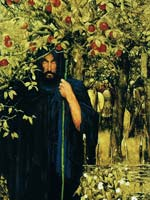

Пуйл, в валлійської міфології владика Діведа, чий авторитет був визнаний навіть в Анноні, потойбічному світі валлійців. Одного разу на полюванні Пуйл побачив зграю сніжно-білих червонооких собак, які переслідували оленя. Пуйл відігнав їх і пустив по сліду свою зграю, але тут з'явився вершник у сірому.
Це був Аравн, правитель Аннона, можливо, є символом Владики зими. Він розповів Пуйлу, що йому докучає Хавган ("пісня літа"), убити якого можна одним ударом, так як другий удар повертає його до життя. Пуйл погодився помінятися з Аравном виглядом на один рік і вбити Хавгана. При цьому було домовлено, що Пуйл ні при яких обставинах не торкнеться дружини Аравна, навіть якщо йому доведеться спати з нею в одному ліжку.
Пуйл вбив Хавгана і, виконавши дане Аравну обіцянку, повернувся на батьківщину, де зустрівся з Рианнон. Вона постала перед ним немов бачення - красуня в білих і золотистих шовках, верхи на перлинно-білому коні. Здавалося, вони створені одне для одного. Але дівчина вже була нареченою Гвавла. Коли Пуйл, переодягнувшись жебраком, з сотнею вершників чекав в засідці суперника і застиг його зненацька, переляканий Гвавл обіцяв залишити закоханих в спокої. Однак слова свого не дотримав, і жорстоке прокляття затьмарило долю Рианнон і Пуйла: довгий час у них не було дітей.
Розчарований безпліддям Рианнон, Пуйл звертався з нею досить суворо. Його ставлення до дружини після народження дитини тільки погіршилося, так як немовля був вкрадений, а няньки звалили провину на Рианнон. Вони розклали біля сплячої господині обгризені кістки, вимазали її кров'ю і повідали Пуйлу брехливу історію про те, як уві сні вона з'їла своє дитя. Пуйл піддав дружину принизливого покарання. Кожен день вона повинна була сидіти біля воріт і розповідати про своє "злочин", після чого на власній спині нести гостей в парадні зали замку. Лише після щасливого повернення сина, якого вона назвала Придери ( "турбота"), Рианнон була звільнена від покарання.